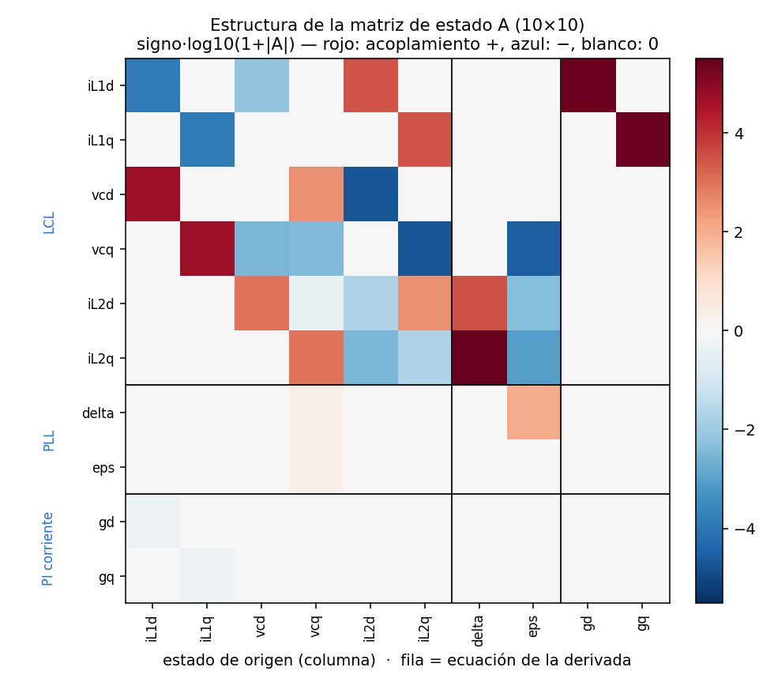
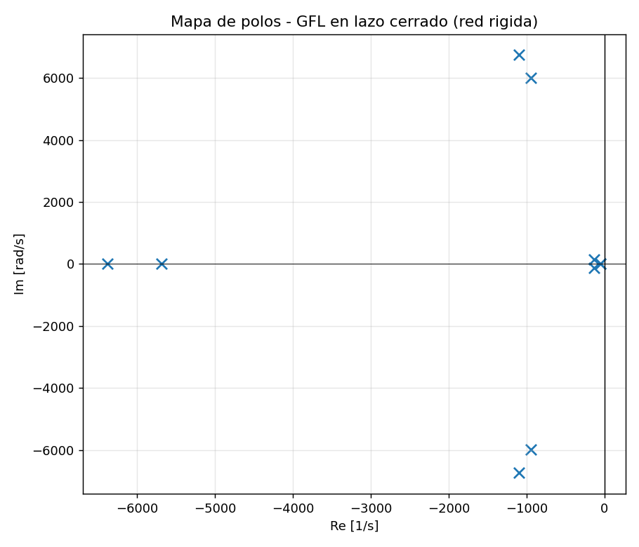
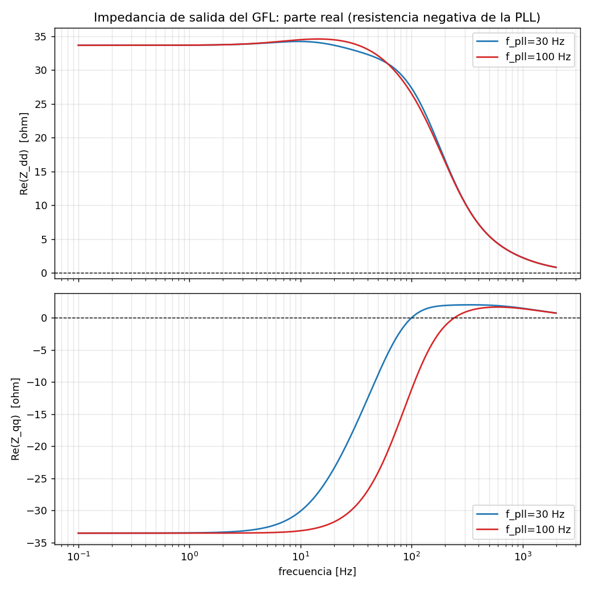
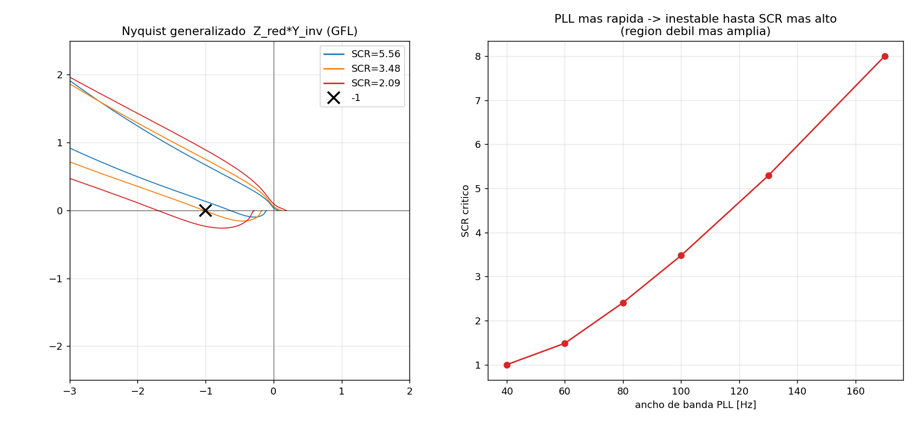
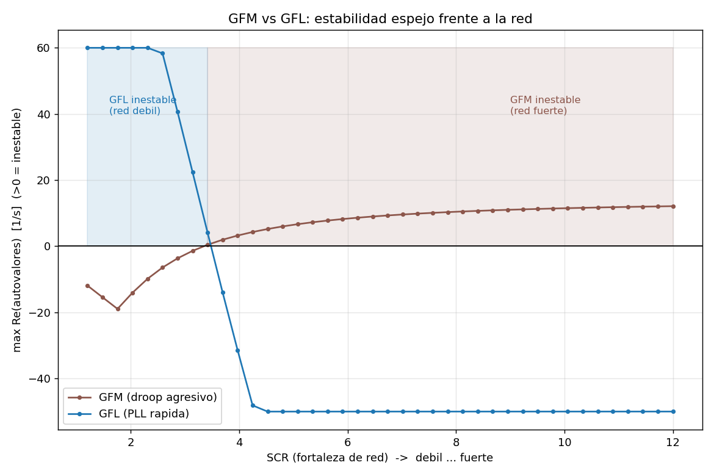
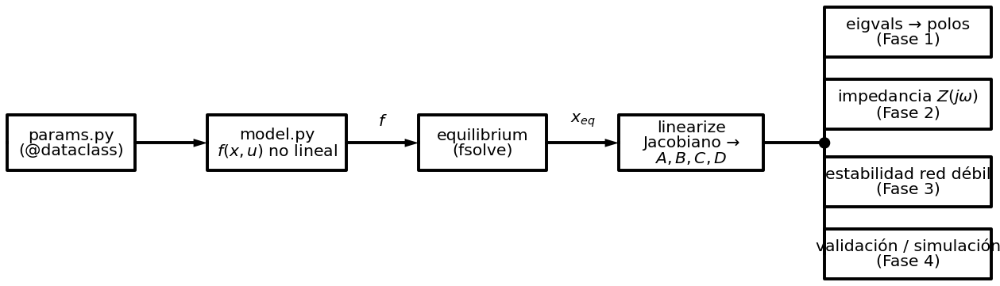

Inversor grid-following: impedancia e inestabilidad en red débil
Informe técnico exhaustivo — el espejo del grid-forming. Modelo de pequeña señal de 10 estados (PLL + lazo de corriente), impedancia de salida, resistencia negativa de la PLL y SCR crítico, con el código de simulación real y sus resultados.
Resumen ejecutivo
El espejo del proyecto 01: mismo hardware, control opuesto, inestabilidad opuesta.
Sobre el mismo filtro LCL del proyecto 01 (10 kVA), se implementa el control grid-following (GFL): una PLL que sigue la red y un lazo de corriente que inyecta la potencia de consigna. El objetivo es entender, con la misma herramienta de impedancia, por qué el GFL se desestabiliza en red débil —lo opuesto al grid-forming— y demostrar que el formalismo de impedancia es general (explica ambos). Como en el proyecto 01, todo el código mostrado es el código real y todos los números son la salida de consola real de ejecutarlo.
Resumen
Se presenta el modelado en pequeña señal y el análisis de estabilidad por impedancia de un inversor grid-following trifásico de 10 kVA con filtro LCL (el mismo hardware del proyecto 01), controlado mediante una PLL de marco síncrono y un lazo de corriente. El modelo no lineal en \( dq \), de diez variables de estado, se linealiza numéricamente para obtener los modos propios y la matriz de impedancia de salida \( \mathbf{Z}_{dq}(s) \). Se identifica la resistencia negativa que la PLL induce en el eje q (comportamiento no pasivo) y, mediante el criterio de Nyquist generalizado, se determina la relación de cortocircuito (SCR) crítica por debajo de la cual el sistema se inestabiliza en red débil. Se demuestra que el ancho de banda de la PLL gobierna monótonamente dicha frontera y se cierra la dualidad grid-forming↔grid-following con la misma herramienta de impedancia.
Palabras clave: inversor grid-following; PLL de marco síncrono; resistencia negativa; estabilidad por impedancia; Nyquist generalizado; red débil; SCR.
Abstract
This work presents the small-signal modelling and impedance-based stability analysis of a 10 kVA three-phase grid-following inverter with an LCL filter (the same hardware as project 01), controlled by a synchronous-reference-frame PLL and a current loop. A ten-state nonlinear \( dq \) model is linearised numerically to obtain the modal eigenvalues and the output impedance matrix \( \mathbf{Z}_{dq}(s) \). The negative resistance induced by the PLL on the q axis (non-passive behaviour) is identified and, via the generalised Nyquist criterion, the critical short-circuit ratio (SCR) below which the system becomes unstable in weak grids is determined. The PLL bandwidth is shown to monotonically govern that boundary, closing the grid-forming↔grid-following duality with the same impedance tool.
Keywords: grid-following inverter; synchronous-reference-frame PLL; negative resistance; impedance-based stability; generalised Nyquist; weak grid; SCR.
Nomenclatura
Magnitudes y parámetros
| Símbolo | Significado |
|---|---|
| \( \mathbf{i}_{L1},\mathbf{v}_C,\mathbf{i}_{L2} \) | estados del filtro LCL (d,q) |
| \( \delta \) | ángulo del marco de la PLL − marco red |
| \( \varepsilon \) | integrador del PI de la PLL |
| \( \gamma_d,\gamma_q \) | integradores del PI de corriente |
| \( \omega_\text{pll} \) | frecuencia estimada por la PLL |
| \( P^*,Q^* \) | consignas de potencia activa/reactiva |
| \( f_\text{pll},\zeta \) | ancho de banda y amort. de la PLL |
| \( K_p^\text{pll},K_i^\text{pll} \) | ganancias de la PLL |
Modelo y acrónimos
| Símbolo / sigla | Significado |
|---|---|
| \( A,B,C,D \) | matrices del modelo lineal |
| \( \mathbf{Y}_\text{inv},\mathbf{Z}_\text{inv} \) | admitancia / impedancia de salida |
| \( \mathbf{L}(s) \) | \( Z_\text{red}Y_\text{inv} \) (minor loop gain) |
| GFL / GFM | grid-following / grid-forming |
| PLL (SRF) | phase-locked loop de marco síncrono |
| SCR / X·R | short-circuit ratio / razón X/R |
| LCL | filtro inductor-condensador-inductor |
Índice, objetivos y alcance
Objetivos
- Modelar el GFL en dq (PLL SRF + lazo de corriente) sobre el LCL del proyecto 01.
- Caracterizar su impedancia de salida y exponer la resistencia negativa de la PLL.
- Hallar el SCR crítico por dos vías (autovalores y Nyquist de impedancia) y mostrar el papel del ancho de banda de la PLL.
- Comparar con el GFM (proyecto 01) para cerrar la dualidad GFM↔GFL.
problema, teoría, método
físico → 10 estados → código
código y resultados
lecciones, conclusiones
1 · Planteamiento del problema
¿Por qué un inversor que "solo sigue a la red" se vuelve inestable en red débil?
1.1 El grid-following es la arquitectura dominante
Casi todo el parque fotovoltaico y eólico instalado es grid-following: mide el ángulo de red con una PLL e inyecta la corriente que entrega la potencia deseada. Es sencillo y eficiente mientras la red sea fuerte. El problema aparece cuando la red se debilita (se llena de convertidores y pierde máquinas síncronas): el GFL empieza a oscilar. Entender ese límite es el objeto de este proyecto.
El grid-following
La PLL alinea el marco dq con la tensión de red (lleva \( v_{Cq}\to 0 \)) y el lazo de corriente impone \( i_{L1} \) para entregar \( P^*,Q^* \). Se comporta como fuente de corriente.
El mecanismo de inestabilidad
En red débil (alta \( L_g \)), la corriente inyectada perturba la tensión del PCC que la PLL mide. La PLL corrige el ángulo → cambia la corriente → vuelve a perturbar la tensión. Si la PLL es rápida, el lazo se cierra con fase desfavorable y oscila.
1.2 El lazo oculto PLL ↔ red
Con red fuerte (\( Z_\text{red}\approx 0 \)) el lazo está "abierto" y la PLL trabaja contra una referencia firme. Con red débil el lazo se cierra; el análisis de impedancia lo traduce a una condición cuantitativa: la resistencia negativa de la PLL (Fase 2).
2 · Estado del arte y marco teórico
Antecedentes y fundamentos de la inestabilidad PLL–red débil.
2.1 Estado del arte
El inversor grid-following es la arquitectura predominante del parque renovable: sincroniza con la red mediante una PLL e inyecta corriente [5]. Su talón de Aquiles es la operación en redes débiles: numerosos trabajos han mostrado que la interacción entre la dinámica de la PLL y la impedancia de red da lugar a oscilaciones e inestabilidad cuando el SCR es bajo [5],[6]. El enfoque de impedancia [4] —caracterizar el convertidor por su admitancia de salida \( \mathbf{Y}_\text{inv} \) y aplicar el criterio de Nyquist generalizado al producto con \( \mathbf{Z}_\text{red} \)— se ha consolidado como la herramienta estándar para predecir estas inestabilidades, y revela que el lazo de la PLL introduce una parte real negativa (comportamiento no pasivo) en la impedancia de salida [6]. Este proyecto reproduce ese fenómeno sobre el mismo hardware del grid-forming del proyecto 01, cerrando la dualidad entre ambas arquitecturas [7],[8] con un único formalismo.
2.2 La PLL de marco síncrono: derivación de segundo orden
Una SRF-PLL es un lazo de control que lleva \( v_{Cq}\to 0 \). Para una desviación de ángulo pequeña \( \Delta\theta \), la componente q de la tensión es \( v_{Cq}\approx V_0\,\Delta\theta \). El PI de la PLL genera la frecuencia \( \omega_\text{pll}=\omega_0+K_p^\text{pll}v_{Cq}+K_i^\text{pll}\!\int v_{Cq} \), y \( \dot{\Delta\theta}=\omega_\text{pll}-\omega_0 \). Sustituyendo, la dinámica del error de fase es:
Igualando a una respuesta de segundo orden objetivo (\( \omega_n=2\pi f_\text{pll} \), \( \zeta=0.707 \)) se despejan \( K_i^\text{pll}=\omega_n^2/V_0 \) y \( K_p^\text{pll}=2\zeta\omega_n/V_0 \) —exactamente las expresiones de params.py—. La normalización por \( V_0 \) hace el ancho de banda independiente del nivel de tensión. Este modo de segundo orden es el "modo de la PLL" que aparece en el mapa de polos a ~21 Hz.
2.3 Pasividad y resistencia negativa
Una impedancia con \( \mathrm{Re}\{Z(j\omega)\}>0 \) disipa energía (pasiva, amortigua); con \( \mathrm{Re}\{Z\}<0 \) la aporta (activa, desamortigua). La PLL, al reaccionar a \( v_{Cq} \) con la fase de un PI, crea —vista desde la red— una conductancia negativa en el eje q en su banda de actuación. La pasividad (signo de \( \mathrm{Re}\{Z\} \)) es por ello un criterio rápido de riesgo: una región de no pasividad es condición necesaria para la inestabilidad, que se materializa al resonar esa resistencia negativa con la reactancia inductiva de la red débil.
2.4 Impedancia y criterio de Nyquist generalizado
Del modelo lineal, \( \mathbf{Y}_\text{inv}=-(\mathbf{C}(s\mathbf{I}-A)^{-1}\mathbf{B}+\mathbf{D}) \). La estabilidad de la conexión la decide \( \mathbf{L}(s)=\mathbf{Z}_\text{red}\mathbf{Y}_\text{inv} \) (MIMO 2×2): los autovalores de \( \mathbf{L}(j\omega) \) no deben rodear \( -1 \), o equivalentemente \( \det(\mathbf{I}+\mathbf{L})\neq 0\ \forall\omega \). El mínimo de \( |\det(\mathbf{I}+\mathbf{L})| \) marca la frontera (SCR crítico). Es el mismo criterio del proyecto 01, lo que evidencia su generalidad.
3 · Software y método
Mismo flujo del proyecto 01; comparte utilidades de análisis.
Todo en Python (NumPy, SciPy, Matplotlib). El método es idéntico al del proyecto 01: modelo no
lineal \( f(\mathbf{x},\mathbf{u}) \) → equilibrio con fsolve → linealización
numérica por diferencias centradas → \( Y(s) \) → Nyquist generalizado. Lo único que cambia es la capa
de control del modelo. De hecho, impedance.py y
grid.py son los mismos que en el proyecto 01, y
main_compare.py carga el modelo del GFM con importlib
para superponer ambas curvas. Esto demuestra que la herramienta de impedancia es general.
4 · El sistema físico
Mismo hardware que el GFM; la diferencia está toda en el control.
4.1 La planta: filtro LCL idéntico al proyecto 01
El inversor, el filtro LCL y la conexión a red son los del proyecto 01 (\( L_1=2 \) mH, \( C_f=20 \) µF, \( L_2=1 \) mH, resonancia ~1.1 kHz). Mantener la planta fija y cambiar solo el control hace de esto un experimento controlado: cualquier diferencia de comportamiento es del control, no del hardware.
4.2 La capa de control: PLL + lazo de corriente
La PLL (SRF). Mide \( v_C \), la proyecta sobre el eje q y ajusta la frecuencia del marco para llevar \( v_{Cq}\to 0 \). Es un PI sobre \( v_{Cq} \). Cuando bloquea, el ángulo del marco sigue al de la red.
El lazo de corriente. Con la PLL alineando \( v_C \) al eje d, la potencia activa la fija \( i_{L1d} \) y la reactiva \( i_{L1q} \). Es un PI rápido (~800 Hz) con desacoplo dq y feedforward de \( v_C \).
4.3 La diferencia conceptual clave
| Grid-forming (01) | Grid-following (02) | |
|---|---|---|
| Quién fija el ángulo | el droop/VSM (interno) | la PLL (sigue la red) |
| Se comporta como | fuente de tensión | fuente de corriente |
| Variable controlada | tensión \( v_C \) | corriente \( i_{L1} \) |
| Falla en | red fuerte | red débil |
5 · Marcos de referencia
Dos marcos, pero el ángulo lo da la PLL (no el droop).
Como en el GFM hay un marco de red (gira a \( \omega_0 \)) y uno de control. La diferencia: aquí el marco de control lo gira la PLL. El ángulo \( \delta=\theta_\text{pll}-\theta_s \) sigue acoplando lo eléctrico con la sincronización, pero su dinámica es la de un lazo de seguimiento:
Aquí nace la resistencia negativa: la PLL, al reaccionar a \( v_{Cq} \), introduce una realimentación que en cierta banda se comporta como conductancia negativa vista desde la red.
6 · Designación de los 10 estados
Cuáles son, de dónde sale cada uno y por qué es estado.
| # | Estado | Por qué es estado | Derivada |
|---|---|---|---|
| 0,1 | iL1d, iL1q | corriente en \( L_1 \) | \( L_1\dot{\mathbf{i}}_{L1}=\mathbf{v}_i-\mathbf{v}_C-R_1\mathbf{i}_{L1}+\omega L_1\mathbf{J}\mathbf{i}_{L1} \) |
| 2,3 | vcd, vcq | tensión en \( C_f \) | \( C_f\dot{\mathbf{v}}_C=\mathbf{i}_{L1}-\mathbf{i}_{L2}+\omega C_f\mathbf{J}\mathbf{v}_C \) |
| 4,5 | iL2d, iL2q | corriente en \( L_2 \) (= \( i_g \)) | \( L_2\dot{\mathbf{i}}_{L2}=\mathbf{v}_C-\mathbf{v}_{pcc}-R_2\mathbf{i}_{L2}+\omega L_2\mathbf{J}\mathbf{i}_{L2} \) |
| 6 | delta | ángulo del marco de la PLL | \( \dot\delta=\omega_\text{pll}-\omega_0 \) |
| 7 | eps | integrador del PI de la PLL | \( \dot\varepsilon=v_{Cq} \) |
| 8,9 | gd, gq | integradores del PI de corriente | \( \dot{\boldsymbol{\gamma}}=\mathbf{i}_{L1}^*-\mathbf{i}_{L1} \) |
Frente a los 15 del GFM, el GFL tiene 10: comparten los 6 de la planta LCL, pero el GFL sustituye
los 9 estados de sincronización del GFM (droop, potencias, impedancia virtual, R transitoria) por solo
4 (PLL + lazo de corriente). Es la lista real STATE_NAMES de
model.py; la Fase 1 devuelve 10 autovalores, confirmándolo.

7 · Parámetros params.py
LCL igual que el 01; control PLL+corriente. Las ganancias se derivan.
El lazo de corriente se sintoniza por cancelación de polo (\( K_{p,i}=L_1\omega_{ci} \), \( K_{i,i}=R_1\omega_{ci} \), con \( f_{ci}=800 \) Hz). La PLL es de segundo orden: dados \( f_\text{pll} \) y \( \zeta \), \( K_i^\text{pll}=\omega_n^2/V_0 \) y \( K_p^\text{pll}=2\zeta\omega_n/V_0 \); la normalización por \( V_0 \) hace el ancho de banda independiente del punto de tensión.
"""Parametros del inversor grid-following (GFL) y de la red.
Mismo filtro LCL que el proyecto GFM (01) para una comparacion justa: cambia la capa de
control (PLL + lazo de corriente) no el hardware.
Convenio dq con amplitud de PICO de fase. P = 1.5(vd id + vq iq), Q = 1.5(vq id - vd iq).
"""
from dataclasses import dataclass, field
import numpy as np
@dataclass
class SystemParams:
# --- Nominales ---
Sn: float = 10e3
Vll: float = 400.0
f0: float = 50.0
# --- Filtro LCL (igual que GFM) ---
L1: float = 2.0e-3
R1: float = 0.10
Cf: float = 20.0e-6
L2: float = 1.0e-3
R2: float = 0.05
Lg: float = 0.0 # red Thevenin (0 = puerto rigido)
Rg: float = 0.0
# --- Lazo de corriente (PI sobre i_L1) ---
f_ci: float = 800.0 # ancho de banda [Hz]
Kad: float = 6.0 # amortiguamiento activo LCL [ohm]
# --- PLL (SRF-PLL sobre v_C) ---
f_pll: float = 30.0 # ancho de banda de la PLL [Hz]
zeta_pll: float = 0.707
# --- Punto de operacion (referencias de corriente desde P,Q) ---
Pset: float = 5.0e3
Qset: float = 0.0
# --- Derivados ---
w0: float = field(init=False)
V0: float = field(init=False)
Kp_i: float = field(init=False)
Ki_i: float = field(init=False)
Kp_pll: float = field(init=False)
Ki_pll: float = field(init=False)
def __post_init__(self):
self.w0 = 2 * np.pi * self.f0
self.V0 = self.Vll * np.sqrt(2.0 / 3.0)
wci = 2 * np.pi * self.f_ci
self.Kp_i = self.L1 * wci
self.Ki_i = self.R1 * wci
# SRF-PLL: 2o orden con wn, zeta; la senal v_q ~ V0*sin(dtheta) ~ V0*dtheta
wn = 2 * np.pi * self.f_pll
self.Ki_pll = wn**2 / self.V0
self.Kp_pll = 2 * self.zeta_pll * wn / self.V0
8 · Modelo matemático model.py
El campo vectorial \( f(\mathbf{x},\mathbf{u}) \) del GFL en 10 ecuaciones.
Se lee de arriba abajo: primero la PLL (frecuencia del marco desde \( v_{Cq} \)), luego las referencias de corriente desde \( P^*,Q^* \), el lazo de corriente PI con desacoplo y feedforward, el amortiguamiento activo, la rotación de la tensión de red por \( \delta \), y la planta LCL. Las referencias \( i^*_{L1d}=2P^*/(3v_{Cd}) \), \( i^*_{L1q}=-2Q^*/(3v_{Cd}) \) son las que convierten al inversor en fuente de corriente.
"""Modelo no lineal del inversor grid-following (GFL) en dq, equilibrio y linealizacion.
Hardware: mismo filtro LCL que el GFM. Control:
- PLL (SRF-PLL) sobre v_C: lleva v_Cq -> 0, alineando el marco de control con la tension.
El angulo del marco de control lo fija la PLL (NO el droop).
- Lazo de corriente PI sobre i_L1 con referencias desde P*,Q* (fuente de corriente).
- Amortiguamiento activo del LCL.
Marcos: 's' (red, gira a w0) y 'c' (control = PLL, gira a w_pll). delta = theta_pll - theta_s.
Estados (10):
0 iL1d 1 iL1q 2 vcd 3 vcq 4 iL2d 5 iL2q
6 delta 7 eps (integrador PLL) 8 gd 9 gq (integradores PI de corriente)
Entrada u (2): [vpcc_sd, vpcc_sq] fem de red en marco s.
Salida y (2): [i_g_sd, i_g_sq] corriente inyectada en marco s (= i_L2 rotada).
"""
import numpy as np
from scipy.optimize import fsolve
STATE_NAMES = ["iL1d", "iL1q", "vcd", "vcq", "iL2d", "iL2q",
"delta", "eps", "gd", "gq"]
NX = len(STATE_NAMES)
class GFLInverter:
def __init__(self, p, opts=None):
self.p = p
o = {"active_damping": True}
if opts:
o.update(opts)
self.o = o
def f(self, x, u):
p = self.p
(iL1d, iL1q, vcd, vcq, iL2d, iL2q, delta, eps, gd, gq) = x
vpcc_sd, vpcc_sq = u
# --- PLL: bloquea v_Cq -> 0; fija la frecuencia del marco de control ---
w = p.w0 + p.Kp_pll * vcq + p.Ki_pll * eps
deps = vcq
ddelta = w - p.w0
# --- Referencias de corriente desde P,Q (fuente de corriente) ---
# con la PLL alineando v_C al eje d, id<->P, iq<->Q
vmag = max(vcd, 1.0)
iL1d_ref = 2.0 * p.Pset / (3.0 * vmag)
iL1q_ref = -2.0 * p.Qset / (3.0 * vmag)
# --- Lazo de corriente PI (sobre i_L1) con desacoplo + feedforward de v_C ---
e_d = iL1d_ref - iL1d
e_q = iL1q_ref - iL1q
dgd, dgq = e_d, e_q
vid = p.Kp_i * e_d + p.Ki_i * gd - w * p.L1 * iL1q + vcd
viq = p.Kp_i * e_q + p.Ki_i * gq + w * p.L1 * iL1d + vcq
if self.o["active_damping"]:
vid -= p.Kad * (iL1d - iL2d)
viq -= p.Kad * (iL1q - iL2q)
# --- Tension de red en marco de control: vpcc_c = R(-delta) vpcc_s ---
cd, sd = np.cos(delta), np.sin(delta)
vpcc_cd = cd * vpcc_sd + sd * vpcc_sq
vpcc_cq = -sd * vpcc_sd + cd * vpcc_sq
# --- Planta LCL (marco c a w) + red Thevenin en serie ---
L2t = p.L2 + p.Lg
R2t = p.R2 + p.Rg
diL1d = (vid - vcd - p.R1 * iL1d + w * p.L1 * iL1q) / p.L1
diL1q = (viq - vcq - p.R1 * iL1q - w * p.L1 * iL1d) / p.L1
dvcd = (iL1d - iL2d + w * p.Cf * vcq) / p.Cf
dvcq = (iL1q - iL2q - w * p.Cf * vcd) / p.Cf
diL2d = (vcd - vpcc_cd - R2t * iL2d + w * L2t * iL2q) / L2t
diL2q = (vcq - vpcc_cq - R2t * iL2q - w * L2t * iL2d) / L2t
return np.array([diL1d, diL1q, dvcd, dvcq, diL2d, diL2q,
ddelta, deps, dgd, dgq])
def output(self, x, u):
delta = x[6]; iL2d, iL2q = x[4], x[5]
cd, sd = np.cos(delta), np.sin(delta)
return np.array([cd * iL2d - sd * iL2q, sd * iL2d + cd * iL2q])
def equilibrium(self, u):
p = self.p
Vg = u[0]
iL2d0 = p.Pset / (1.5 * Vg)
iL2q0 = -p.Qset / (1.5 * Vg)
x0 = np.zeros(NX)
x0[0] = iL2d0; x0[1] = iL2q0 + p.w0 * p.Cf * Vg
x0[2] = Vg; x0[3] = 0.0
x0[4] = iL2d0; x0[5] = iL2q0
x_eq, info, ier, msg = fsolve(lambda x: self.f(x, u), x0,
full_output=True, xtol=1e-12)
return x_eq, {"ier": ier, "msg": msg, "residual": np.linalg.norm(self.f(x_eq, u))}
def linearize(self, x_eq, u_eq, eps=1e-6):
n, m, q = NX, len(u_eq), 2
A = np.zeros((n, n)); B = np.zeros((n, m))
C = np.zeros((q, n)); D = np.zeros((q, m))
for j in range(n):
dx = eps * max(1.0, abs(x_eq[j]))
xp = x_eq.copy(); xp[j] += dx
xm = x_eq.copy(); xm[j] -= dx
A[:, j] = (self.f(xp, u_eq) - self.f(xm, u_eq)) / (2 * dx)
C[:, j] = (self.output(xp, u_eq) - self.output(xm, u_eq)) / (2 * dx)
for j in range(m):
du = eps * max(1.0, abs(u_eq[j]))
up = u_eq.copy(); up[j] += du
um = u_eq.copy(); um[j] -= du
B[:, j] = (self.f(x_eq, up) - self.f(x_eq, um)) / (2 * du)
D[:, j] = (self.output(x_eq, up) - self.output(x_eq, um)) / (2 * du)
return A, B, C, D
w = w0 + Kp_pll*vcq + Ki_pll*eps es la
PLL; vmag = max(vcd, 1.0) evita dividir por cero en las referencias. La planta
LCL es idéntica a la del GFM (mismo hardware).9 · Equilibrio y linealización
Idéntico método al proyecto 01.
El equilibrio se halla con fsolve desde un guess físico; la Fase 1
confirma residual \( \approx 1.8\times10^{-11} \), \( P_\text{eq}=5000 \) W y \( v_{Cq}\approx 0 \) (la
PLL bloqueada, \( \sim 10^{-28} \)). La linealización es por diferencias centradas escaladas, igual que
en el proyecto 01. impedance.py (compartido) construye
\( Y=-G \), \( Z=Y^{-1} \).
"""Impedancia/admitancia de salida dq del inversor a partir del modelo linealizado.
Convencion de signos:
El modelo tiene u = v_pcc (tension impuesta en el puerto, marco s)
y = i_g (corriente inyectada hacia la red, marco s)
G(s) = C(sI-A)^-1 B + D = d i_g / d v_pcc.
Vista de fuente (Norton): i_g = i_auto - Y_inv * v_pcc => Y_inv = -G(s).
Impedancia de salida: Z_inv(s) = Y_inv(s)^-1 (matriz 2x2 en dq).
"""
import numpy as np
from params import SystemParams
from model import GFLInverter as GFMInverter # alias: misma interfaz que el GFM
def build_linear(p, opts=None):
"""Construye (A,B,C,D, x_eq) en el punto de operacion nominal."""
g = GFMInverter(p, opts)
u = np.array([p.V0, 0.0])
x_eq, info = g.equilibrium(u)
if info["residual"] > 1e-6:
raise RuntimeError(f"equilibrio no converge (res={info['residual']:.1e})")
A, B, C, D = g.linearize(x_eq, u)
return A, B, C, D, x_eq
def admittance(A, B, C, D, freqs_hz):
"""Y_inv(jw) para cada frecuencia [Hz]. Devuelve array (N,2,2) complejo."""
n = A.shape[0]
I = np.eye(n)
Y = np.zeros((len(freqs_hz), 2, 2), dtype=complex)
for k, f in enumerate(freqs_hz):
s = 2j * np.pi * f
G = C @ np.linalg.solve(s * I - A, B) + D # d i_g / d v_pcc
Y[k] = -G # admitancia de salida
return Y
def impedance(A, B, C, D, freqs_hz):
"""Z_inv(jw) = Y_inv(jw)^-1. Devuelve array (N,2,2) complejo."""
Y = admittance(A, B, C, D, freqs_hz)
Z = np.zeros_like(Y)
for k in range(len(freqs_hz)):
Z[k] = np.linalg.inv(Y[k])
return Z
if __name__ == "__main__":
p = SystemParams()
A, B, C, D, _ = build_linear(p)
f = np.array([1.0, 10.0, 100.0, 1000.0])
Z = impedance(A, B, C, D, f)
print("Z_dd(jw) (magnitud ohm) en 1/10/100/1000 Hz:")
for k, ff in enumerate(f):
print(f" {ff:6.0f} Hz: |Zdd|={abs(Z[k,0,0]):7.3f} |Zqq|={abs(Z[k,1,1]):7.3f}")
Fase 1 · Estabilidad en red rígida
Punto de partida: con red fuerte el GFL es estable.
"""Fase 1: equilibrio, polos y mapa de polos del inversor grid-following (red rigida)."""
import os, sys
sys.path.insert(0, os.path.dirname(os.path.abspath(__file__)))
import numpy as np
import matplotlib
matplotlib.use("Agg")
import matplotlib.pyplot as plt
from params import SystemParams
from model import GFLInverter
p = SystemParams()
g = GFLInverter(p)
u = np.array([p.V0, 0.0])
x, info = g.equilibrium(u)
P = 1.5 * (x[2] * x[4] + x[3] * x[5]); Q = 1.5 * (x[3] * x[4] - x[2] * x[5])
print("=" * 60); print("FASE 1 - Inversor grid-following (red rigida)"); print("=" * 60)
print(f"Equilibrio: ier={info['ier']} residual={info['residual']:.2e}")
print(f" P_eq={P:8.1f} W Q_eq={Q:8.1f} var |vc|={np.hypot(x[2],x[3]):.1f} V delta={np.degrees(x[6]):.2f} deg")
print(f" v_Cq={x[3]:.2e} (la PLL lo lleva a 0)")
A, B, C, D = g.linearize(x, u)
eig = np.linalg.eigvals(A); eig = eig[np.argsort(-eig.real)]
print("\nAutovalores:")
for l in eig:
print(f" {l.real:>10.2f} {l.imag:>+10.2f}j f={abs(l.imag)/2/np.pi:7.1f} Hz zeta={-l.real/abs(l) if abs(l)>0 else 1:+.3f}")
print(f"\nSistema {'ESTABLE' if np.all(eig.real<0) else 'INESTABLE'} (max Re={eig.real.max():.2f})")
print("Nota: el modo a ~21 Hz, zeta 0.71, es el de la PLL (f_pll=30 Hz).")
outdir = os.path.join(os.path.dirname(os.path.abspath(__file__)), "results")
os.makedirs(outdir, exist_ok=True)
fig, ax = plt.subplots(figsize=(7, 6))
ax.scatter(eig.real, eig.imag, marker="x", s=70, c="C0")
ax.axvline(0, color="k", lw=0.8); ax.axhline(0, color="k", lw=0.5)
ax.set_xlabel("Re [1/s]"); ax.set_ylabel("Im [rad/s]")
ax.set_title("Mapa de polos - GFL en lazo cerrado (red rigida)")
ax.grid(True, alpha=0.3); fig.tight_layout()
fig.savefig(os.path.join(outdir, "polos_fase1.png"), dpi=130)
print("\nFigura: results/polos_fase1.png")
1.1 Resultados reales

ESTABLE \( \max\mathrm{Re}=-50.0 \). El polo dominante es el modo de la PLL a 21.3 Hz con \( \zeta=0.708 \) (diseñada a 30 Hz, \( \zeta=0.707 \); la diferencia refleja la interacción con la planta). Equilibrio: \( P=5000 \) W, \( v_{Cq}\approx 0 \) (la PLL alinea), \( \delta=0.54° \). La resonancia LCL aparece a ~950–1073 Hz.
Fase 2 · Impedancia: la resistencia negativa
La firma del GFL: parte real negativa en la banda de la PLL.
"""Fase 2: impedancia de salida dq del GFL y la resistencia negativa de la PLL.
La firma del grid-following: en la banda de la PLL, la parte REAL de la impedancia de
salida se vuelve negativa (comportamiento no pasivo). Cuanto mas rapida la PLL, mas
pronunciada -> mayor riesgo de inestabilidad al encontrarse con la impedancia de la red.
"""
import os, sys
sys.path.insert(0, os.path.dirname(os.path.abspath(__file__)))
import numpy as np
import matplotlib
matplotlib.use("Agg")
import matplotlib.pyplot as plt
from params import SystemParams
from impedance import build_linear, impedance
f = np.logspace(-1, 3.3, 600)
fig, ax = plt.subplots(2, 1, figsize=(8, 8), sharex=True)
for fpll, col in [(30.0, "C0"), (100.0, "C3")]:
A, B, C, D, _ = build_linear(SystemParams(f_pll=fpll))
Z = impedance(A, B, C, D, f)
ax[0].semilogx(f, Z[:, 0, 0].real, col, label=f"f_pll={fpll:.0f} Hz")
ax[1].semilogx(f, Z[:, 1, 1].real, col, label=f"f_pll={fpll:.0f} Hz")
for a, name in zip(ax, ["Re(Z_dd)", "Re(Z_qq)"]):
a.axhline(0, color="k", lw=0.8, ls="--")
a.set_ylabel(f"{name} [ohm]"); a.grid(True, which="both", alpha=0.3); a.legend()
ax[0].set_title("Impedancia de salida del GFL: parte real (resistencia negativa de la PLL)")
ax[1].set_xlabel("frecuencia [Hz]")
fig.tight_layout()
outdir = os.path.join(os.path.dirname(os.path.abspath(__file__)), "results")
os.makedirs(outdir, exist_ok=True)
fig.savefig(os.path.join(outdir, "impedancia_fase2.png"), dpi=130)
# La resistencia negativa aparece en el EJE Q (la PLL actua sobre v_q):
print("Parte real de la impedancia de salida, eje q Re(Z_qq) [ohm]:")
print(f"{'f[Hz]':>8} {'f_pll=30':>10} {'f_pll=100':>10}")
A1, B1, C1, D1, _ = build_linear(SystemParams(f_pll=30.0))
A2, B2, C2, D2, _ = build_linear(SystemParams(f_pll=100.0))
for ff in [1, 5, 10, 20, 50, 100]:
z1 = impedance(A1, B1, C1, D1, [ff])[0, 1, 1]
z2 = impedance(A2, B2, C2, D2, [ff])[0, 1, 1]
print(f"{ff:8.0f} {z1.real:10.2f} {z2.real:10.2f}")
print("\nRe(Z_qq) < 0 = comportamiento NO PASIVO (resistencia negativa) inducido por la PLL.")
print("Con PLL rapida se mantiene negativa hasta mas alta frecuencia -> mas riesgo en red debil.")
print("Figura: results/impedancia_fase2.png")
2.1 Resultados reales

La parte real de la impedancia es negativa en el eje q en la banda de la PLL: a 1 Hz vale −33.5 Ω. Con PLL rápida (100 Hz) se mantiene negativa hasta más alta frecuencia (a 100 Hz: −11.2 Ω, frente a −0.01 con 30 Hz).
Fase 3 · Inestabilidad en red débil
SCR crítico por dos vías y el papel del ancho de banda de la PLL.
3.1 La red Thévenin grid.py
"""Red Thevenin en dq parametrizada por SCR y X/R."""
import numpy as np
def grid_params(scr, xr, p):
"""Devuelve (Rg, Lg) de la red para un SCR y X/R dados.
SCR = S_cc/Sn, S_cc = Vll^2/|Zg| => |Zg| = Vll^2/(SCR*Sn).
"""
Zg = p.Vll**2 / (scr * p.Sn)
Rg = Zg / np.sqrt(1.0 + xr**2)
Xg = Rg * xr
Lg = Xg / p.w0
return Rg, Lg
def grid_impedance_dq(Rg, Lg, w0, freqs_hz):
"""Z_grid(jw) en dq (2x2) de un inductor R+jX con acoplamiento cruzado w0*Lg."""
Z = np.zeros((len(freqs_hz), 2, 2), dtype=complex)
for k, f in enumerate(freqs_hz):
s = 2j * np.pi * f
Z[k] = np.array([[Rg + s * Lg, -w0 * Lg],
[w0 * Lg, Rg + s * Lg]])
return Z
3.2 El driver
"""Fase 3: inestabilidad del GFL en red debil.
(A) Autovalores del modelo acoplado -> SCR critico.
(B) Criterio de impedancia (Nyquist generalizado de Z_red*Y_inv) -> debe coincidir.
Ademas: como el ancho de banda de la PLL mueve el SCR critico.
Se usa una PLL rapida (f_pll=100 Hz) que SI pierde estabilidad en red debil.
"""
import os, sys
sys.path.insert(0, os.path.dirname(os.path.abspath(__file__)))
import numpy as np
import matplotlib
matplotlib.use("Agg")
import matplotlib.pyplot as plt
from params import SystemParams
from model import GFLInverter
from impedance import build_linear, admittance
from grid import grid_params, grid_impedance_dq
XR = 5.0
FPLL = 100.0
def coupled_maxre(scr, fpll=FPLL):
p0 = SystemParams(f_pll=fpll); Rg, Lg = grid_params(scr, XR, p0)
p = SystemParams(f_pll=fpll, Rg=Rg, Lg=Lg); g = GFLInverter(p)
u = np.array([p.V0, 0.0]); x, r = g.equilibrium(u)
if r["residual"] > 1e-6: return np.nan
return np.linalg.eigvals(g.linearize(x, u)[0]).real.max()
# (A) SCR critico (acoplado) por biseccion: estable a SCR alto, inestable a SCR bajo
lo, hi = 2.0, 6.0
for _ in range(40):
mid = 0.5 * (lo + hi)
(lo, hi) = (lo, mid) if coupled_maxre(mid) < 0 else (mid, hi)
scr_crit_c = 0.5 * (lo + hi)
print(f"(A) SCR critico (modelo acoplado) = {scr_crit_c:.3f} [inestable por debajo]")
# (B) Nyquist de impedancia: Y_inv del inversor solo
p_inv = SystemParams(f_pll=FPLL)
A, B, C, D, _ = build_linear(p_inv)
f = np.logspace(-1, 3.3, 2000)
Y = admittance(A, B, C, D, f)
def mindet(scr):
Rg, Lg = grid_params(scr, XR, p_inv); Zg = grid_impedance_dq(Rg, Lg, p_inv.w0, f)
return min(abs(np.linalg.det(np.eye(2) + Zg[k] @ Y[k])) for k in range(len(f)))
scrs = np.linspace(2.5, 4.5, 60); d = [mindet(s) for s in scrs]
scr_crit_i = scrs[int(np.argmin(d))]
print(f"(B) SCR critico (Nyquist impedancia) = {scr_crit_i:.3f}")
print(f" diferencia = {abs(scr_crit_i-scr_crit_c):.3f}")
# Nyquist a 3 SCR
def loop_eigs(scr):
Rg, Lg = grid_params(scr, XR, p_inv); Zg = grid_impedance_dq(Rg, Lg, p_inv.w0, f)
return np.array([np.linalg.eigvals(Zg[k] @ Y[k]) for k in range(len(f))])
outdir = os.path.join(os.path.dirname(os.path.abspath(__file__)), "results")
os.makedirs(outdir, exist_ok=True)
fig, ax = plt.subplots(1, 2, figsize=(13, 6))
for scr, col in [(scr_crit_c*1.6, "C0"), (scr_crit_c, "C1"), (scr_crit_c*0.6, "C3")]:
lam = loop_eigs(scr)
for j in range(2):
ax[0].plot(lam[:, j].real, lam[:, j].imag, col, lw=1.0)
ax[0].plot(np.nan, np.nan, col, label=f"SCR={scr:.2f}")
ax[0].plot(-1, 0, "kx", ms=12, mew=2, label="-1")
ax[0].set_xlim(-3, 2); ax[0].set_ylim(-2.5, 2.5); ax[0].set_aspect("equal")
ax[0].axhline(0, color="k", lw=.4); ax[0].axvline(0, color="k", lw=.4)
ax[0].set_title("Nyquist generalizado Z_red*Y_inv (GFL)"); ax[0].legend(); ax[0].grid(alpha=.3)
# efecto del ancho de banda de la PLL en el SCR critico
fplls = [40, 60, 80, 100, 130, 170]; crit = []
for fp in fplls:
lo, hi = 1.0, 8.0
for _ in range(34):
mid = 0.5*(lo+hi); (lo, hi) = (lo, mid) if coupled_maxre(mid, fp) < 0 else (mid, hi)
crit.append(0.5*(lo+hi))
ax[1].plot(fplls, crit, "o-", color="C3")
ax[1].set_xlabel("ancho de banda PLL [Hz]"); ax[1].set_ylabel("SCR critico")
ax[1].set_title("PLL mas rapida -> inestable hasta SCR mas alto\n(region debil mas amplia)")
ax[1].grid(alpha=.3)
fig.tight_layout(); fig.savefig(os.path.join(outdir, "estabilidad_fase3.png"), dpi=130)
print("\nSCR critico vs f_pll:")
for fp, c in zip(fplls, crit):
print(f" f_pll={fp:4.0f} Hz -> SCR critico = {c:.2f}")
print("Figura: results/estabilidad_fase3.png")
3.3 Resultados reales

| Método | SCR crítico |
|---|---|
| (A) Modelo acoplado | 3.478 |
| (B) Nyquist de impedancia | 3.551 |
| Diferencia 0.073 → ~2 % | |
Inestable por debajo del crítico (red débil), lo opuesto al GFM. El barrido de \( f_\text{pll} \) es monótono: 40→1.00, 100→3.48, 170→8.00.
GFM vs GFL: estabilidad espejo
El resultado que une los dos proyectos.
El script carga el modelo del GFM (proyecto 01) con importlib y superpone
el \( \max\mathrm{Re} \) de ambos frente al SCR:
"""Comparacion GFM vs GFL: estabilidad frente a la fortaleza de la red.
Resultado central del estudio: son ESPEJO uno del otro.
- GFL (PLL rapida): estable en red fuerte, INESTABLE en red debil (SCR bajo).
- GFM (droop agresivo): estable en red debil, INESTABLE en red fuerte (SCR alto).
Carga el modelo GFM del proyecto 01 con importlib (sin colision de nombres) y el GFL local.
"""
import os, sys, importlib.util, pathlib
sys.path.insert(0, os.path.dirname(os.path.abspath(__file__)))
import numpy as np
import matplotlib
matplotlib.use("Agg")
import matplotlib.pyplot as plt
from params import SystemParams
from model import GFLInverter
from grid import grid_params
BASE = pathlib.Path(__file__).parent.parent
def load(name, path):
spec = importlib.util.spec_from_file_location(name, path)
mod = importlib.util.module_from_spec(spec); sys.modules[name] = mod
spec.loader.exec_module(mod); return mod
gfm_params = load("gfm_params", BASE / "01 - GFM-Impedance" / "params.py")
gfm_model = load("gfm_model", BASE / "01 - GFM-Impedance" / "model.py")
GFM_CFG = dict(droop_p=0.03, droop_q=0.05, Lv=2e-3, Rvt=0.0, Rv=0.0, f_cv=250)
XR = 5.0
def gfm_maxre(scr):
p0 = gfm_params.SystemParams(**GFM_CFG); Rg, Lg = grid_params(scr, XR, p0)
p = gfm_params.SystemParams(Rg=Rg, Lg=Lg, **GFM_CFG); g = gfm_model.GFMInverter(p)
u = np.array([p.V0, 0.0]); x, r = g.equilibrium(u)
if r["residual"] > 1e-6: return np.nan
return np.linalg.eigvals(g.linearize(x, u)[0]).real.max()
def gfl_maxre(scr, fpll=100.0):
p0 = SystemParams(f_pll=fpll); Rg, Lg = grid_params(scr, XR, p0)
p = SystemParams(f_pll=fpll, Rg=Rg, Lg=Lg); g = GFLInverter(p)
u = np.array([p.V0, 0.0]); x, r = g.equilibrium(u)
if r["residual"] > 1e-6: return np.nan
return np.linalg.eigvals(g.linearize(x, u)[0]).real.max()
scr = np.linspace(1.2, 12, 40)
mg = np.array([gfm_maxre(s) for s in scr])
ml = np.array([gfl_maxre(s) for s in scr])
fig, ax = plt.subplots(figsize=(9, 6))
ax.plot(scr, np.clip(mg, -60, 60), "C5-o", ms=3, label="GFM (droop agresivo)")
ax.plot(scr, np.clip(ml, -60, 60), "C0-o", ms=3, label="GFL (PLL rapida)")
ax.axhline(0, color="k", lw=1)
ax.fill_between(scr, 0, 60, where=(np.clip(mg,-60,60) > 0), color="C5", alpha=0.12)
ax.fill_between(scr, 0, 60, where=(np.clip(ml,-60,60) > 0), color="C0", alpha=0.12)
ax.set_xlabel("SCR (fortaleza de red) -> debil ... fuerte")
ax.set_ylabel("max Re(autovalores) [1/s] (>0 = inestable)")
ax.set_title("GFM vs GFL: estabilidad espejo frente a la red")
ax.annotate("GFL inestable\n(red debil)", (1.6, 40), color="C0", fontsize=9)
ax.annotate("GFM inestable\n(red fuerte)", (9, 40), color="C5", fontsize=9)
ax.legend(); ax.grid(alpha=.3); fig.tight_layout()
outdir = os.path.join(os.path.dirname(os.path.abspath(__file__)), "results")
os.makedirs(outdir, exist_ok=True)
fig.savefig(os.path.join(outdir, "comparacion_gfm_gfl.png"), dpi=130)
def crit(fn, lo, hi, decr):
for _ in range(36):
m = 0.5*(lo+hi); v = fn(m)
if decr: (lo, hi) = (m, hi) if v < 0 else (lo, m)
else: (lo, hi) = (lo, m) if v < 0 else (m, hi)
return 0.5*(lo+hi)
print(f"SCR critico GFM (inestable por ENCIMA) ~ {crit(gfm_maxre,2,6,True):.2f}")
print(f"SCR critico GFL (inestable por DEBAJO) ~ {crit(gfl_maxre,2,6,False):.2f}")
print("Figura: results/comparacion_gfm_gfl.png")
★.1 Resultados reales

| GFL | GFM | |
|---|---|---|
| Impone | corriente | tensión |
| Red problemática | débil (Z alta) | fuerte (Z baja) |
| Mecanismo | PLL ve tensión inestable | \( \partial P/\partial\delta \) excesiva |
| Frontera | SCR≈3.48 (por debajo) | SCR≈3.35 (por encima) |
10 · Discusión global
Síntesis crítica, contraste con lo esperado y limitaciones.
10.1 Coherencia interna
Los resultados encajan en una sola narrativa física: el modo de la PLL identificado en la Fase 1 (21.3 Hz) es el que la Fase 2 muestra como resistencia negativa en el eje q, el que la Fase 3 lleva a la inestabilidad al resonar con la red débil, y el que el barrido de \( f_\text{pll} \) desplaza monótonamente. El acuerdo del SCR crítico por autovalores (3.478) y por Nyquist de impedancia (3.551), del ~2 %, valida el método de impedancia [4] frente a la "verdad" del modelo acoplado.
10.2 Contraste con lo esperado y con la literatura
- La resistencia negativa de la PLL en el eje q reproduce el mecanismo descrito en [6]: la no pasividad se concentra donde la PLL actúa (\( v_{Cq} \)), no en el eje d.
- La inestabilidad en red débil (SCR bajo) es el comportamiento canónico del grid-following [5], opuesto al del grid-forming, que el proyecto 01 muestra inestable en red fuerte.
- La relación monótona PLL rápida → SCR crítico mayor cuantifica el compromiso clásico seguimiento↔robustez de la PLL.
10.3 Limitaciones
- Modelo promediado y condiciones equilibradas (sin conmutación ni faltas asimétricas).
- PLL SRF básica; no se modelan PLL avanzadas (DSOGI, SOGI-FLL) que alteran la resistencia negativa.
- Linealización en un punto de operación nominal; sin análisis de incertidumbre paramétrica.
11 · Lecciones aprendidas
Sobre el GFL
- El GFL con PLL nominal (30 Hz) es robusto incluso en red muy débil; la inestabilidad aparece al acelerar la PLL.
- La resistencia negativa vive en el eje q (la PLL controla \( v_{Cq} \)).
- El ancho de banda de la PLL fija el SCR crítico de forma monótona: es la palanca y un compromiso seguimiento↔robustez.
Sobre el método
- El método de impedancia (el mismo del 01) predijo el SCR crítico con ~2 % de error: es general.
- Reutilizar impedance.py y grid.py entre proyectos demuestra que GFM y GFL son el mismo problema con distinta capa de control.
- La pasividad (signo de \( \mathrm{Re}\{Z\} \)) es un diagnóstico rápido de riesgo antes de Nyquist.
12 · Conclusiones, aportaciones y líneas futuras
Cierre formal del estudio del grid-following.
12.1 Conclusiones generales
- El modelo GFL de 10 estados es estable en red rígida (\( \max\mathrm{Re}=-50 \)), con el modo de la PLL a 21.3 Hz (\( \zeta=0.71 \)) coherente con su diseño de segundo orden.
- La impedancia de salida es no pasiva: \( \mathrm{Re}\{Z_{qq}\}<0 \) en la banda de la PLL, firma de la realimentación de la PLL sobre el eje q.
- El SCR crítico (\( \approx 3.5 \), inestable por debajo) se predice por dos vías con ~2 % de error, y crece monótonamente con el ancho de banda de la PLL (de 1 a 8 entre 40 y 170 Hz).
- La dualidad GFM↔GFL queda demostrada con un único formalismo de impedancia: el GFL falla en red débil, el GFM en red fuerte.
12.2 Aportaciones
- Reutilización del método del proyecto 01 (impedancia + Nyquist) sobre un control opuesto, evidenciando su generalidad (mismos impedance.py y grid.py).
- Cuantificación de la frontera de estabilidad en función de la palanca de diseño (ancho de banda de la PLL), con barrido reproducible.
- Cierre de la dualidad GFM↔GFL en una sola figura comparativa, de alto valor didáctico.
12.3 Limitaciones
Resumidas en el cap. 10.3: modelo promediado, condiciones equilibradas, PLL SRF básica y punto de operación nominal.
12.4 Líneas futuras
- PLL avanzadas (DSOGI, SOGI-FLL) y su efecto sobre la resistencia negativa.
- Desequilibrio (componentes simétricas) y respuesta a faltas.
- Validación en PLECS del modelo conmutado.
- Estrategias de mitigación: realimentación de tensión, impedancia activa, atenuación de la PLL.
Bibliografía
| [4] | J. Sun, "Impedance-based stability criterion for grid-connected inverters," IEEE Trans. Power Electron., vol. 26, no. 11, 2011. |
| [5] | X. Wang, F. Blaabjerg, "Harmonic stability in power electronic-based power systems," IEEE Trans. Smart Grid, vol. 10, no. 3, 2019. |
| [6] | B. Wen et al., "Analysis of D-Q small-signal impedance of grid-tied inverters," IEEE Trans. Power Electron., vol. 31, no. 1, 2016. |
| [7] | R. H. Lasseter et al., "Grid-forming inverters: a critical asset for the power grid," IEEE J. Emerg. Sel. Topics Power Electron., vol. 8, no. 2, 2020. |
| [8] | D. B. Rathnayake et al., "Grid forming inverter modeling, control, and applications," IEEE Access, vol. 9, 2021. |
| [11] | S.-K. Chung, "A phase tracking system for three phase utility interface inverters," IEEE Trans. Power Electron., vol. 15, no. 3, 2000 (diseño de la SRF-PLL). |
Referencias de fundamento; el código y los resultados numéricos son propios. Cada concepto está desarrollado en el repositorio.
Apéndice A · Parámetros
A.1 Nominales y LCL (= proyecto 01)
| Parámetro | Valor |
|---|---|
| \( S_n \) / \( V_{ll} \) / \( f_0 \) | 10 kVA / 400 V / 50 Hz |
| \( V_0 \) (pico fase) | 326.6 V |
| \( L_1 \) / \( R_1 \) | 2 mH / 0.10 Ω |
| \( C_f \) | 20 µF |
| \( L_2 \) / \( R_2 \) | 1 mH / 0.05 Ω |
A.2 Control GFL
| Parámetro | Valor |
|---|---|
| BW lazo corriente \( f_{ci} \) | 800 Hz |
| Amort. activo \( K_\text{ad} \) | 6 Ω |
| BW PLL nominal \( f_\text{pll} \) | 30 Hz |
| Amortiguamiento PLL \( \zeta \) | 0.707 |
| \( P^* \) / \( Q^* \) | 5 kW / 0 var |
| Barrido PLL (Fase 3) | 40 – 170 Hz |
Apéndice B · Vector de estado (10 estados)
| # | Estado | Significado | Grupo |
|---|---|---|---|
| 0 | iL1d | corriente inductor inversor, eje d | planta LCL |
| 1 | iL1q | corriente inductor inversor, eje q | planta LCL |
| 2 | vcd | tensión condensador, eje d | planta LCL |
| 3 | vcq | tensión condensador, eje q | planta LCL |
| 4 | iL2d | corriente a red (i_g), eje d | planta LCL |
| 5 | iL2q | corriente a red (i_g), eje q | planta LCL |
| 6 | delta | ángulo del marco de la PLL | PLL |
| 7 | eps | integrador del PI de la PLL | PLL |
| 8 | gd | integrador PI corriente, eje d | lazo corriente |
| 9 | gq | integrador PI corriente, eje q | lazo corriente |
Apéndice C · Código fuente del proyecto
Los ficheros principales están embebidos en sus capítulos; aquí el auxiliar de diagramas.
"""Genera los diagramas del proyecto GFL con schemdraw (offline):
1) esquema_electrico.png - circuito del modelo (VSC + LCL + red) [igual que el GFM: mismo hardware]
2) diagrama_modelo.png - bloques del modelo
3) diagrama_control.png - estrategia de control (PLL + lazo de corriente)
"""
import os
import matplotlib
matplotlib.use("Agg")
import schemdraw
import schemdraw.elements as elm
import schemdraw.dsp as dsp
OUT = os.path.join(os.path.dirname(os.path.abspath(__file__)), "results")
os.makedirs(OUT, exist_ok=True)
def esquema_electrico():
d = schemdraw.Drawing(); d.config(unit=2.0, fontsize=11)
d += elm.RBox(w=2.2, h=2.6).label("VSC\n2-niveles\nPWM\n$V_{dc}$=750V")
d += elm.Line().right(0.5)
d += elm.Inductor2().right().label("$L_1$ 2mH")
d += elm.Resistor().right().label("$R_1$")
d += elm.Dot().label("$v_C$", loc="top")
d.push()
d += elm.Capacitor().down().label("$C_f$\n20µF", loc="bottom"); d += elm.Ground()
d.pop()
d += elm.Line().right(0.4)
d += elm.Inductor2().right().label("$L_2$ 1mH")
d += elm.Resistor().right().label("$R_2$")
d += elm.Dot().label("PCC", loc="top")
d += elm.Inductor2().right().label("$L_g$ (red)")
d += elm.Resistor().right().label("$R_g$")
d += elm.SourceSin().down().label("red\n50 Hz", loc="bottom"); d += elm.Ground()
d.save(os.path.join(OUT, "esquema_electrico.png"), dpi=150)
def diagrama_modelo():
d = schemdraw.Drawing(); d.config(unit=1.0, fontsize=11)
ctrl = d.add(dsp.Box(w=2.6, h=1.1).label("CONTROL GFL\n(PLL + corriente)"))
d.add(dsp.Arrow().right(2).at(ctrl.E).label("$v_{inv}$", "top"))
pl = d.add(dsp.Box(w=3.2, h=1.6).anchor("W").label("PLANTA LCL\n$L_1$–$C_f$–$L_2$\n(6 estados dq)"))
d.add(dsp.Arrow().right(2.6).at(pl.E).label("$i_g$ (puerto $v_{pcc}$)", "top"))
d.add(dsp.Box(w=2.0, h=1.1).anchor("W").label("RED\n$Z_{red}$ (SCR)"))
d.add(dsp.Line().down(1.8).at(pl.S))
d.add(dsp.Arrow().left().tox(ctrl.S).label("$v_C, i_{L1}$", "bottom"))
d.add(dsp.Line().up(1.8).toy(ctrl.S))
d.save(os.path.join(OUT, "diagrama_modelo.png"), dpi=150)
def diagrama_control():
d = schemdraw.Drawing(); d.config(unit=0.9, fontsize=10.5)
# cadena principal: referencias de corriente -> PI corriente -> VSC -> planta
ref = d.add(dsp.Box(w=2.6, h=1.0).label("ref. corriente\n$i^*$ ← $P^*,Q^*$"))
d.add(dsp.Arrow().right(1.3).at(ref.E))
si = d.add(dsp.Sum().anchor("W"))
d.add(dsp.Arrow().right(1.1).at(si.E))
pii = d.add(dsp.Box(w=1.9, h=1.0).anchor("W").label("PI\ncorriente"))
d.add(dsp.Arrow().right(1.2).at(pii.E).label("$v_{inv}$", "top"))
pl = d.add(dsp.Box(w=2.1, h=1.2).anchor("W").label("PLANTA\nLCL"))
d.add(dsp.Arrow().right(1.3).at(pl.E).label("$i_g$", "top"))
# realimentacion de corriente (desde SSW para no cruzar con la PLL)
d.add(dsp.Line().down(1.6).at(pl.SSW))
d.add(dsp.Line().left().tox(si.S))
d.add(dsp.Arrow().up().toy(si.S).label("$i_{L1}$", "right"))
# PLL: mide v_C (desde SSE, baja) y devuelve theta,omega que define el marco dq
d.add(dsp.Line().down(2.9).at(pl.SSE).label("$v_C$", "right"))
pll = d.add(dsp.Box(w=2.6, h=1.0).anchor("N").label("PLL ($v_{Cq}\\to 0$)"))
d.add(dsp.Arrow().left(3.6).at(pll.W).label("$\\theta,\\omega$ → marco dq", "top"))
d.save(os.path.join(OUT, "diagrama_control.png"), dpi=150)
if __name__ == "__main__":
esquema_electrico(); print("esquema_electrico.png")
diagrama_modelo(); print("diagrama_modelo.png")
diagrama_control(); print("diagrama_control.png")
Apéndice D · Resultados de consola (ejecución real)
Fase 1 — main_phase1.py
Fase 2 — main_phase2.py
Fase 3 — main_phase3.py
Comparación — main_compare.py
Apéndice E · Cómo reproducir

python main_phase1.py # equilibrio, polos (red rigida) -> results/polos_fase1.png python main_phase2.py # impedancia, resistencia negativa -> results/impedancia_fase2.png python main_phase3.py # SCR critico, barrido de PLL -> results/estabilidad_fase3.png python main_compare.py # GFM vs GFL (carga modelo del 01) -> results/comparacion_gfm_gfl.png python figuras_modelo.py # estructura de A + flujo -> results/matriz_A.png, flujo_codigo.png python gen_informe.py # regenera este informe.html
Requiere Python 3.13 con NumPy, SciPy y Matplotlib.
Apéndice F · Glosario
| GFL / GFM | Grid-following (inyecta corriente) / grid-forming (impone tensión). |
| PLL (SRF) | Estima el ángulo de red llevando \( v_{Cq}\to 0 \). |
| SCR | Short-circuit ratio: fortaleza de la red. Bajo = débil. |
| resistencia negativa | \( \mathrm{Re}\{Z\}<0 \): aporta energía (no pasiva). |
| ancho de banda PLL | \( f_\text{pll} \): palanca que fija el SCR crítico. |
| minor loop gain | \( L=Z_\text{red}Y_\text{inv} \); su Nyquist decide la estabilidad. |
Definiciones extensas en el repositorio de conocimiento.